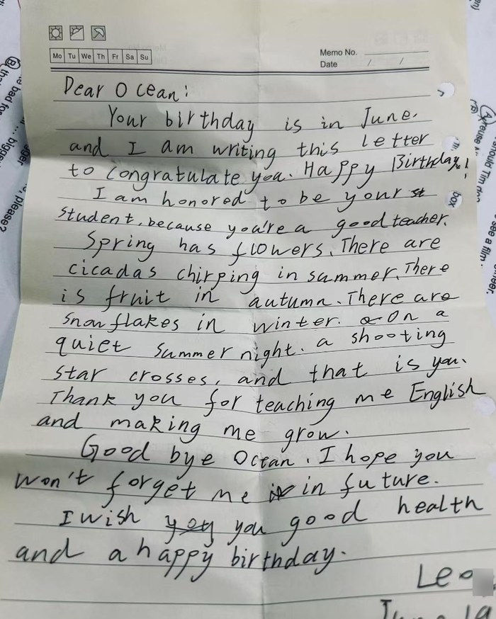
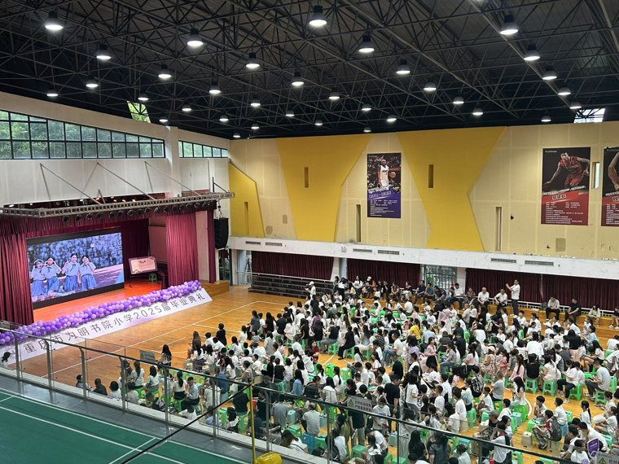

Why the IB mission is not abstract to me
The IB says it wants to create a better and more peaceful world through intercultural understanding and respect. When I first read that, it sounded like the kind of sentence organisations write to sound important. Then I noticed it was describing my own life — not as an aspiration, but as a daily fact. Married into a Chinese family, raising a child between two cultures, teaching in my third language. Intercultural understanding is not a value I adopted for a job application.
That's why the mission sits underneath everything on this site. When my Grade 2 students interview a family member about a cultural story, or my Selective class explains Chongqing to an audience in English, they are practising exactly what that sentence describes. They just don't know it's called a mission statement.
From profile as text to lived profile
At the beginning of my IB journey, the Learner Profile was something I could name and describe. Through the unit-planning process, it became something I could design for and observe. Inquirers appeared when students generated questions for the Wonder Wall. Communicators developed through oral storytelling and interviews. Open-mindedness became visible when students listened to family and cultural stories that were different from their own. The Profile moved from text on a page to lived classroom experience.
That shift — from knowing about something to building it into practice — is what I now understand education to mean. It is not enough for IB principles to be present in a lesson plan. Students should recognise them, reflect on them, and understand how to transfer them to new contexts.
Confucius once said, "Learning without reflection is a waste. Reflection without learning is dangerous." Living and teaching in Chongqing, this quote has always felt personally close — but it is only now, within the IB framework, that I am beginning to truly understand it.
What I believe about language learning
Language isn't a subject. It's how people make sense of the world and find their place in it. In my classroom, English is the medium through which students explore identity, culture, and ideas — not just a set of grammar rules to memorize. I want students to leave my class thinking in English, not just performing it.
Multilingual learners do not need to wait for perfect English before they can participate in meaningful inquiry. Visual scaffolds, oral rehearsal, drawing, family interviews, and mother-tongue contributions allow students to express identity while continuing to build English. The moment reflection — or language — becomes a graded performance, the real learning vanishes.
Why I am still in the room
A professional learning session on AI made me ask what I am actually for, if a machine can produce a personalised English lesson in seconds. My answer, after sitting with it for a while: grammar transfer was never the job. Cultural knowledge, relationships, and language as connection were. The full version of that argument is on the AI in Education page.
What no tool can do is build the relationship. That is why I teach.
How this shows up in my teaching
- Inquiry-first units — every unit starts with a question students genuinely care about, not a topic handed down from a textbook
- Transdisciplinary connections — language learning connected to science, culture, history, real-world issues — not siloed into "English time"
- Agency — voice, choice and ownership — students lead discussions, choose how they present, and direct their own reflection. Agency is the part I have had to work hardest at: it means letting go of some control, and trusting that a student who chooses their own path will go further than one following mine
- ATL skills taught, not assumed — communication, social, self-management and thinking skills are named and practised openly with students, so they know what they are building and not just what they are producing
- Action — inquiry that ends in something real: a campaign poster, a performance for an audience, a booking a student can actually defend
- Cultural affirmation — lesson content that reflects my students' own backgrounds alongside global perspectives
- Assessment that informs, not just measures — formative comment banks, oral assessments, and student-led showcases rather than test scores alone
- Reflection as a genuine habit — not a graded performance at the end of a unit, but a regular, scaffolded part of how we learn together
On being a trilingual teacher in China
Growing up Hungarian, learning Mandarin as a second language, and teaching in English daily gives me a particular perspective on what language learners go through. I know what it feels like to be a beginner in a language you desperately want to use. I know the frustration of having complex thoughts but limited vocabulary to express them. That experience makes me patient with beginners. It also makes me precise about what they actually need — because I remember needing it myself.
Learn language. About language. Through language.
This three-part framing isn't mine — it comes from Michael Halliday's work, and the IB builds its whole language programme on it. But it stopped being theory for me when I started planning units with it. Here is what each part looks like in my classroom:
Building the forms, vocabulary, and structures students need to communicate with confidence across contexts.
Developing awareness of how language works, reflects culture, shapes identity, and connects communities.
Using English as the medium to explore real ideas, real questions, and real connections to the world — not just practice sentences.
What I'm working toward
I'm not interested in just delivering curriculum. I want to help build the kind of school culture where inquiry is the norm, where teachers collaborate on real problems, and where students see themselves as global citizens — regardless of where they grow up. That's what IB authorization means to me at BI Zandem: not a rubber stamp, but a genuine shift in how we think about education.
My principal once showed me a small notebook full of crossings-out in red pen and told me that reflection is what gives her courage — that by looking back and learning from mistakes, the unknown stops being terrifying. I want to build that same habit into my own practice.
A letter from Leo
At the end of Grade 6, one of my students wrote me a birthday letter by hand, in English. He had noticed my birthday was in June. He wrote about the seasons — flowers in spring, cicadas in summer, fruit in autumn, snowflakes in winter — and then compared me to a shooting star crossing a quiet summer night.
No lesson plan produces that. He chose the images, he chose to write in his second language, and he chose paper over a message. I keep it because on the days when teaching feels like paperwork, it is the evidence that something else is happening.

